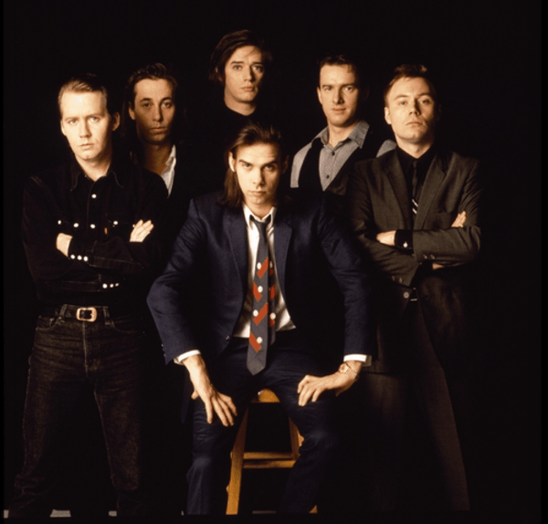

Nick Cave & The Bad Seeds
Years Active: 1983–present
Genre/s: Alternative rock, gothic rock, experimental rock, art rock, post-punk
Label/s: Bad Seed Ltd. via Kobalt Label Services, Mute, Anti-
Members: Nick Cave, Thomas Wydler, Martyn P. Casey, Jim Sclavunos, Warren Ellis, George Vjestica
Nick Cave and the Bad Seeds are an Australian rock band formed in Melbourne in 1983 by lead vocalist Nick Cave, multi-instrumentalist Mick Harvey and German guitarist-vocalist Blixa Bargeld. The band has featured international personnel throughout its career and presently consists of Cave, violinist and multi-instrumentalist Warren Ellis, bassist Martyn P. Casey (all from Australia), guitarist George Vjestica (United Kingdom), touring keyboardist/percussionist Larry Mullins, also known as Toby Dammit (United States), and drummers Thomas Wydler (Switzerland) and Jim Sclavunos (United States). Described as "one of the most original and celebrated bands of the post-punk and alternative rock eras in the '80s and onward", they have released eighteen studio albums and completed numerous international tours.
The band was founded following the demise of Cave and Harvey's former group the Birthday Party, the members of which met at a boarding school in Melbourne. Throughout the 1980s, beginning with their debut studio album From Her to Eternity (1984), the band drew largely on post-punk, blues and gothic rock, and formed an evolving, multinational lineup, bringing in musicians such as Blixa Bargeld, Barry Adamson and Kid Congo Powers. The band later softened their sound and incorporated other influences on studio albums such as The Good Son (1990) and The Boatman's Call (1997). Following Harvey's departure in 2009, the band broadened their sound further to include electronic and ambient styles, which feature prominently on the trilogy of studio albums Push the Sky Away (2013), Skeleton Tree (2016) and Ghosteen (2019). Wild God is their most recent, released in 2024.